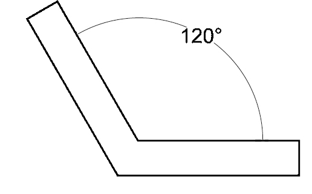

Historias y Trucos para una Vida Saludable
Truco para el Estrés: La "Técnica del Respiro Profundo"
El estrés es un factor común que puede influir en nuestras decisiones y bienestar general. La "Técnica del Respiro Profundo" es una herramienta sencilla pero poderosa que puedes usar en cualquier momento para calmar tu mente y cuerpo, ayudándote a tomar mejores decisiones y a reducir la ansiedad.
**Paso 1: Inhala lentamente por la nariz durante 4 segundos.** Siente cómo tu abdomen se eleva.
**Paso 2: Mantén el aire en tus pulmones durante 7 segundos.** Nota la quietud y la sensación de plenitud.
**Paso 3: Exhala lentamente por la boca durante 8 segundos.** Hazlo de forma controlada, sintiendo cómo el aire sale y tu abdomen se desinfla. Concéntrate en liberar toda la tensión.
**Repite esta secuencia (4-7-8) de 3 a 5 veces.** Con cada ciclo, notarás cómo tu ritmo cardíaco se ralentiza, tus músculos se relajan y tu mente se despeja. Practícala antes de situaciones estresantes, cuando sientas ansiedad, o simplemente como parte de tu rutina diaria para mantener la calma.
Truco para Prevención: Cómo Identificar y Evitar Disparadores
Un "disparador" es cualquier persona, lugar, cosa o emoción que te hace sentir ganas de consumir una sustancia. Identificar tus disparadores es el primer paso crucial para evitarlos o manejarlos de manera efectiva.
**1. Lleva un registro:** Anota cuándo y dónde sientes el deseo de consumir. ¿Qué estabas haciendo? ¿Con quién estabas? ¿Cómo te sentías? Patrones pueden surgir rápidamente.
**2. Evita proactivamente:** Una vez que identifiques tus disparadores, intenta evitarlos. Esto puede significar cambiar rutas, evitar ciertas amistades o lugares, o desarrollar nuevas actividades para ocupar tu tiempo.
**3. Desarrolla estrategias de afrontamiento:** Si no puedes evitar un disparador, ten un plan. Esto podría ser llamar a un amigo de apoyo, practicar la técnica del respiro profundo, salir a caminar, o recordarte tus razones para mantenerte sobrio.
**4. Busca apoyo:** Hablar con un terapeuta, un consejero o un grupo de apoyo puede proporcionarte herramientas y estrategias adicionales para manejar los disparadores de forma saludable. No tienes que hacerlo solo.
Como hacer un pipa con una manzana
Pillas una manzana(si es roja mejor)

Haz un agujero por un lado que llegue al centro(usa un cuchillo,un boligrafo o con la churra)
Haz otro agujero por otro lado, intenta que hagan un angulo de entre 90º y 120º.
Imagen por si no tienes la primaria:

Prepara un trozo de papel albal con algunos agujeros,el tema es que funcione como redecilla para que una vez aspires no cuele ninguna mota de sustacia (de la que deja fragancia)
Pon este instumento en el agujero que te apetezca
Pon la maria o una mezcla de hacho y tabaco (se puede solo pero no quema tan bien) en la redecilla
Pilla un mechero ya sea tu clipper de confianza o un jett y prendele a esa baina loca que te lleva a la gloria.